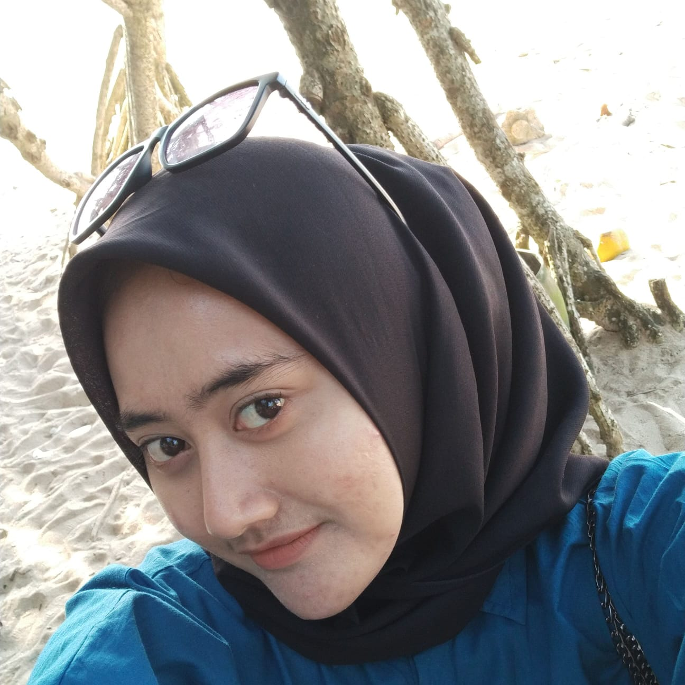

INDONESIA
Republik Indonesia disingkat RI atau Indonesia negara di Asia Tenggara, yang dilintasi garis khatulistiwa dan berada di antara benua Asia dan Australia serta antara Samudra Pasifik dan Samudra Hindia. Indonesia adalah negara kepulauan terbesar di dunia yang terdiri dari 13.466 pulau, Nama alternatif yang biasa dipakai adalah Nusantara. Dengan populasi sekitar sebesar 260 juta jiwa pada tahun 2013, Indonesia adalah negara berpenduduk terbesar keempat di dunia dan negara yang berpenduduk Muslim terbesar di dunia, sekitar 230 juta meskipun secara resmi bukanlah negara Islam. Bentuk pemerintahan Indonesia adalah republik, dengan Dewan Perwakilan Rakyat, Dewan Perwakilan Daerah dan Presiden yang dipilih langsung.
Indonesia terdiri dari berbagai suku bangsa, bahasa, dan agama. Berdasarkan rumpun bangsa, Indonesia terdiri atas bangsa asli pribumi yakni Austronesia dan Melanesia di mana bangsa Austronesia yang terbesar jumlahnya dan lebih banyak mendiami Indonesia bagian barat. Dengan suku Jawa dan Sunda membentuk kelompok suku bangsa terbesar dengan persentase mencapai 57% dari seluruh penduduk Indonesia. Semboyan nasional Indonesia, "Bhinneka Tunggal Ika" (Berbeda-beda tetapi tetap satu), bermakna keberagaman sosial-budaya yang membentuk satu kesatuan negara. Selain memiliki penduduk yang padat dan wilayah yang luas, Indonesia memiliki alam yang mendukung tingkat keanekaragaman hayati terbesar ke-2 di dunia.
Indonesia berbatasan dengan sejumlah negara di Asia Tenggara dan Oseania. Indonesia berbatasan di wilayah darat dengan Malaysia di Pulau Kalimantan dan Sebatik, dengan Papua Nugini di Pulau Papua, dan dengan Timor Leste di Pulau Timor. Negara yang hanya berbatasan laut dengan Indonesia adalah Singapura, Filipina, Australia, Thailand, Vietnam, Palau, dan wilayah persatuan Kepulauan Andaman dan Nikobar, India.
Indonesia adalah negara kesatuan dengan bentuk pemerintahan republik berdasarkan konstitusi yang sah, yaitu Undang-Undang Dasar Negara Republik Indonesia Tahun 1945 (UUD 1945). Berdasarkan UUD 1945 pula, Dewan Perwakilan Rakyat (DPR), Dewan Perwakilan Daerah (DPD), dan Presiden dicalonkan lalu dipilih dalam pemilihan umum. Ibu kota Indonesia saat ini adalah Jakarta. Pada tanggal 18 Januari 2022, pemerintah Indonesia menetapkan Ibu Kota Nusantara yang berada di Pulau Kalimantan, yang menempati wilayah Kabupaten Penajam Paser Utara, untuk menggantikan Jakarta sebagai ibu kota yang baru. Hingga tahun 2022, peralihan ibu kota masih berlangsung.
Presiden Indonesia:
- Soekarno
- Soeharto
- BJ. Habibie
- Abdurrahman Wahid
- Megawati Soekarnoputri
- Susilo Bambang Yudhoyono
- Joko Widodo
Berikut beberapa contoh provinsi di Indonesia:
- Jawa Timur
- Jambi
- Aceh
- Bali
- Jawa Barat
- Jawa Tengah
- Riau
- NTT
- Banten
- Maluku
- Papua
Akun Media Sosial:
| No. | Platform | Link |
|---|---|---|
| 1 | Akun Instagram | |
| 2 | Github | Akun Github |
| 3 | Akun Facebook |
-  Instagram